수정 전 원인
카드 배경이 내부 296pt 콘텐츠에만 적용됐고, 팝업이 MyPageView 안에 있어 공통 하단 탭은 딤 영역 밖에 있었습니다.
FIILSA · iOS QA · 2026.10.11
iOS QA 5건의 수정 내용과 현재 남은 차이를 화면별로 모았습니다. 각 캡처를 누르면 원본 크기로 열립니다. 이 보고서를 검토한 뒤 커밋과 머지 여부를 결정할 수 있습니다.
팝업 카드의 바깥 여백은 화면 부모가, 안쪽 여백은 카드 자식이 정합니다. 화면 전체 딤에는 공통 하단 탭도 포함됩니다.
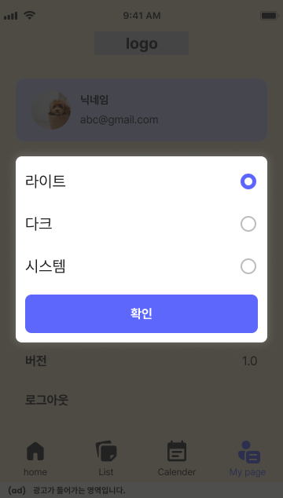
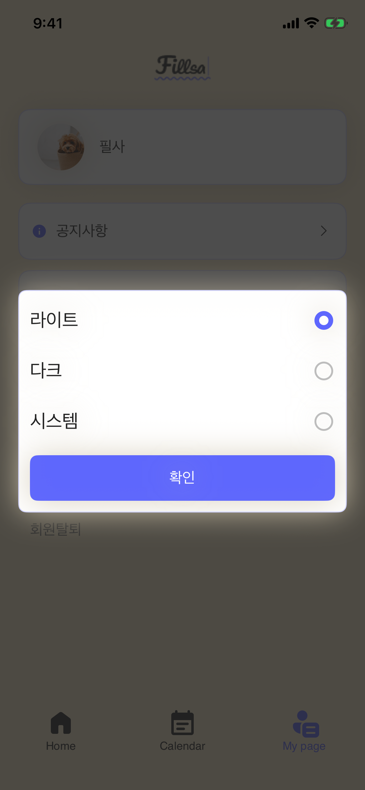
팝업 자체는 화면 좌우 20pt 여백과 약 237pt 높이를 확인했습니다. 두 전체 프레임의 높이와 프로필 데이터는 다릅니다.
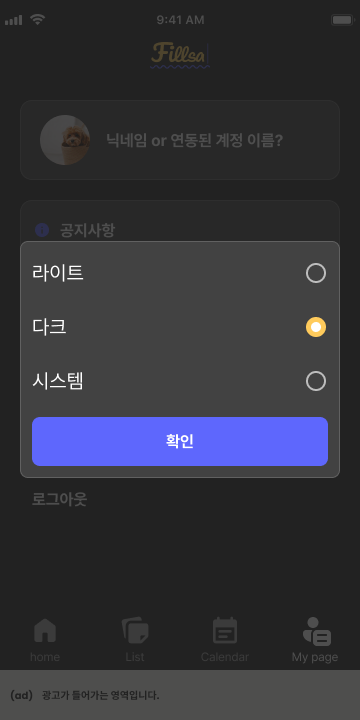
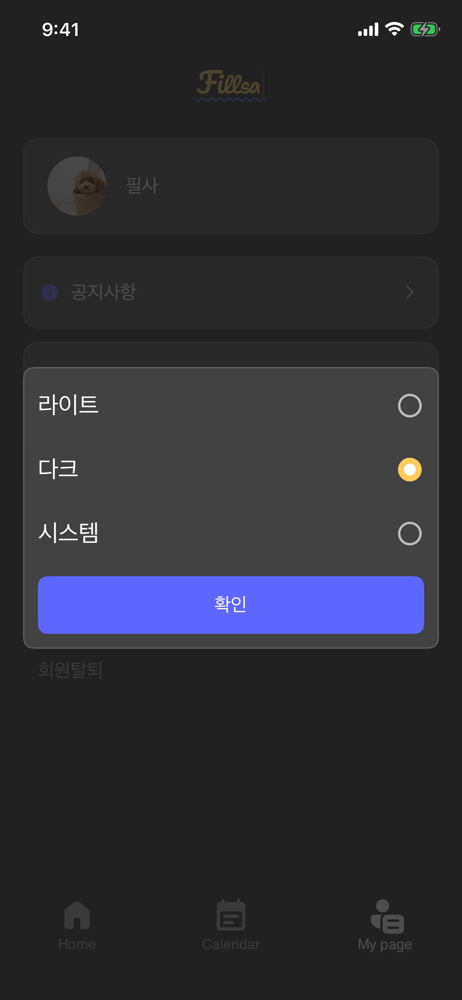
카드 배경이 내부 296pt 콘텐츠에만 적용됐고, 팝업이 MyPageView 안에 있어 공통 하단 탭은 딤 영역 밖에 있었습니다.
배경을 내부 패딩 바깥에 적용하고 팝업을 AppView 오버레이로 옮겼습니다. 좌우 20pt·내부 12pt 패딩, 세 테마 선택과 확인 동작을 유지합니다.
월 카드와 날짜 열은 부모의 남는 너비를 사용합니다. 날짜 셀·안내·명언 카드·액션 행의 높이는 글자와 내부 패딩으로 구성했습니다.
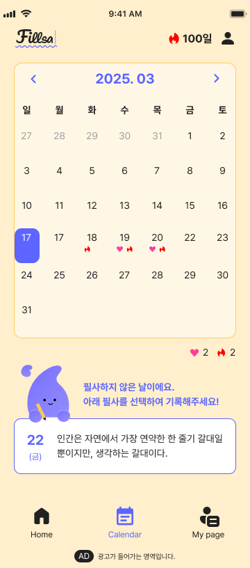
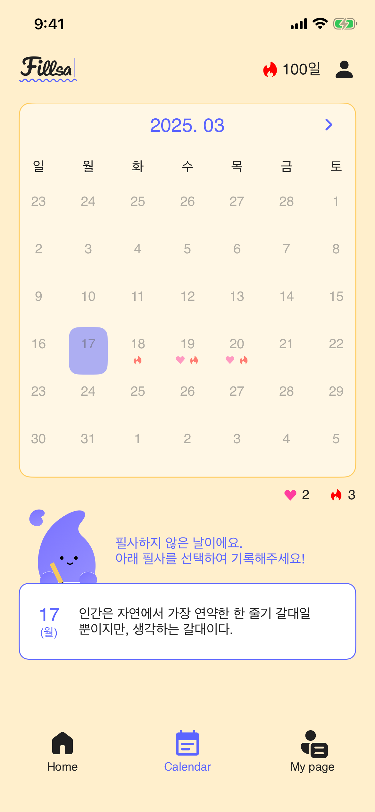
안내 글자는 Bold 14pt, 미완료 명언 카드의 테두리는 보라색입니다. 선택 날짜와 활성 여부는 Figma 예시 데이터와 다릅니다.
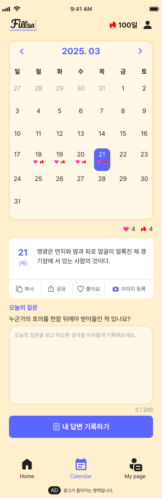
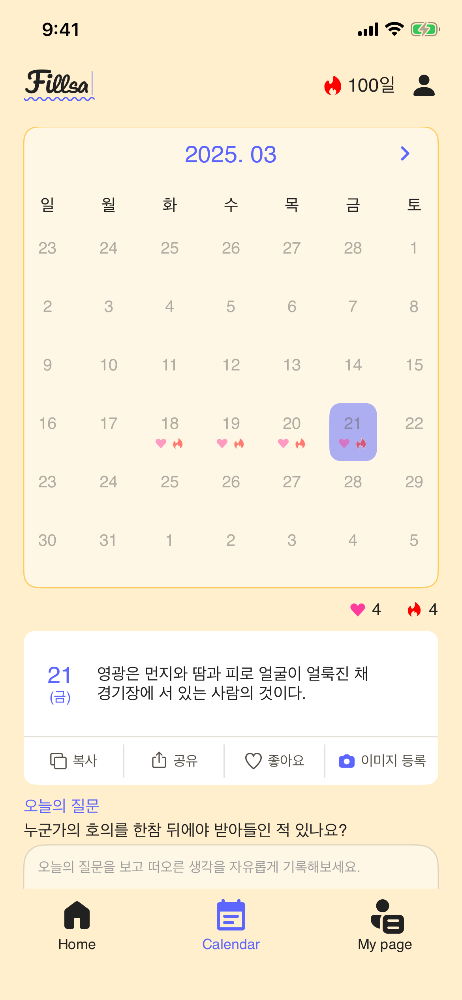
액션의 ‘이미지 등록’은 한 줄로 보이며 Light 구분선은 #E7E2D8입니다. Figma의 긴 스크롤 프레임과 런타임 한 화면은 같은 경계가 아닙니다.
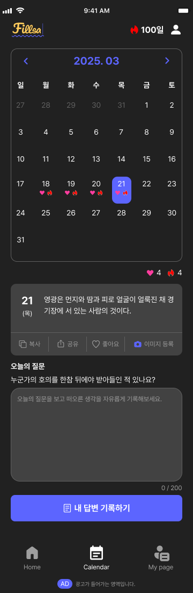
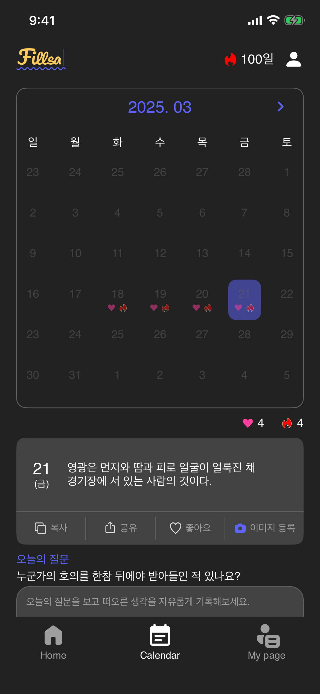
월 카드 320pt, 날짜 셀 36pt와 일부 세로 높이가 고정됐습니다. 미완료 안내 글꼴·카드 테두리, 완료 카드 구분선도 Figma와 달랐습니다.
7열이 부모 너비를 함께 나누고 셀과 카드가 패딩으로 높이를 만듭니다. Bold 안내, 보라색 미완료 테두리, Light/Dark 구분선과 한 줄 액션을 적용했습니다.
Figma는 2025년 3월 날짜를 활성 상태로 보여주지만 앱은 2025년 6월부터 선택하도록 제한합니다. 시뮬레이터의 3월 날짜가 회색인 이유입니다. 이 제한은 과거 날짜 선택 동작이라 이번 시각 수정에서 바꾸지 않았습니다.
완료 카드의 세 버튼은 위 ‘완료 Light/Dark’ 캡처에서 확인할 수 있습니다. 현재 코드에는 세 동작이 이미 연결돼 있어 화면만으로 실사용 오류가 해결됐다고 판단하지 않았습니다.
회원 fixture에서 버튼 탭과 공유 화면 이동을 확인했습니다. 비회원 fixture에서는 이미지 등록 시 로그인 안내가 뜨고 공유 화면으로 이동했습니다. 이전 실행의 회원 이미지 팝업 UI 테스트도 통과했습니다.
실제 회원·비회원 계정 및 서버 데이터의 실패 원인과 클립보드에 복사된 값은 검증하지 못했습니다. 제품 액션 로직은 추측으로 변경하지 않았습니다.
명언에는 Figma의 실제 강원교육 OTF Bold 글꼴을 등록했습니다. 토글 배경은 노란색으로 바꾸고 크기는 각 글자의 패딩으로 결정합니다.
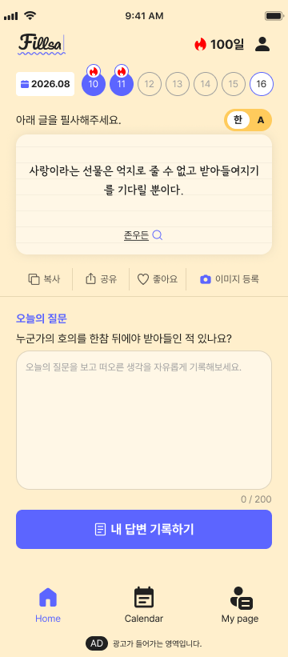
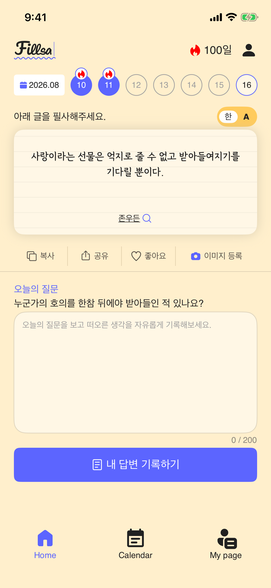
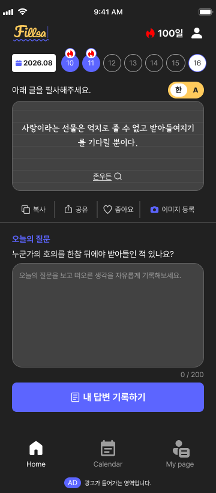
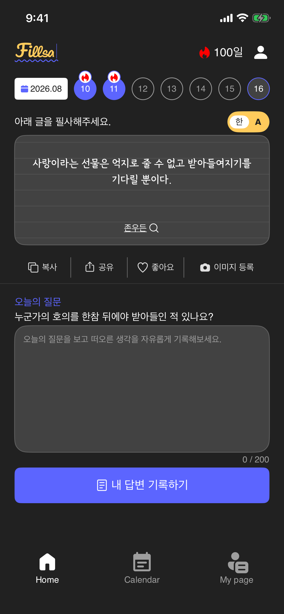
등록되지 않은 Light 글꼴의 합성 Bold를 실제 GangwonEduAll-OTFBold로 바꿨습니다. 배경 이미지의 원본 비율이 카드 높이를 늘리던 문제도 이미지가 콘텐츠 크기에 관여하지 않도록 수정했습니다.
보라색 배경을 Figma의 #FFCB5C로 바꿨습니다. Latin ‘A’는 Poppins Bold 12pt, 한글은 Pretendard Bold 12pt를 사용하고 부모/자식 패딩으로 너비를 만듭니다.
영어가 선택된 상태와 긴 명언의 최종 캡처는 아직 없습니다. 두 전체 프레임의 너비도 360pt와 390pt로 달라 최종 픽셀 일치 판정은 보류합니다.
Blocked입니다.빌드: iPhone 17e / iOS 26.5 Simulator 성공. 대상 테스트 17개 통과, 실패 0개. 브랜치 fix/ios-qa-20261009의 수정은 아직 커밋하거나 머지하지 않았습니다.